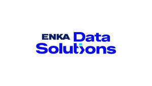

Trade Mark Journal No.2025/047 21 November 2025
UK00004291256 7 November 2025 (9,35,38,39,40,42)

- Class 9
- Computer software; software applications; computer software for document management; computer software for use during procurement processes; computer software for use by vendors of goods and services; computer software for networks of vendors; computer software for human resources management; computer software for finance; computer software for welding management systems; computer software for task management; computer software for health, safety and environment management; computer software for organising and delivering meetings; computer software for use in customer relations by vendors; computers; desktop computers; telecommunications apparatus; apparatus for the reproduction of sound or images; computer peripheral devices; telephone apparatus; computer printers; scanners [data processing equipment]; photocopiers; magnetic and optic data carriers and computer software and programs recorded thereto, downloadable and recordable electronic publications; mobile applications; cryptocurrencies (software); downloadable digital files authenticated by non-fungible tokens (NFTs); encoded magnetic and optic cards; antennas, satellite antennas, amplifiers for antennas, parts of the aforementioned goods; electronic components used in the electronic parts of machines and apparatus, semi-conductors, electronic circuits, integrated circuits, chips [integrated circuits], diodes, transistors [electronic], magnetic heads for electronic apparatus, electronic locks, photocells, remote control apparatus for opening and closing doors, optical sensors; counters and quantity indicators for measuring the quantity of consumption, automatic time switches; apparatus and instruments for conducting, transforming, accumulating or controlling electricity, electric plugs, junction boxes [electricity], electric switches, circuit breakers, fuses, lighting ballasts, battery starter cables, electrical circuit boards, electric resistances, electric sockets, transformers [electricity], electrical adapters, battery chargers, electric door bells, electric and electronic cables, batteries.
- Class 35
- Advertising, marketing and public relations services; provision of an online marketplace for buyers and sellers of goods and services; office functions; secretarial services; rental of office machines; systemization of information into computer databases; business management, business administration and business consultancy services; the bringing together, for the benefit of others, of a variety of goods, namely, computers, desktop computers, telecommunications apparatus, apparatus for the reproduction of sound or images, computer peripheral devices, telephone apparatus, computer printers, scanners [data processing equipment], photocopiers, magnetic and optic data carriers and computer software and programs recorded thereto, downloadable and recordable electronic publications, mobile applications, cryptocurrencies (software), non-fungible tokens (NFTs), encoded magnetic and optic cards, antennas, satellite antennas, amplifiers for antennas, parts of the aforementioned goods; electronic components used in the electronic parts of machines and apparatus, semi-conductors, electronic circuits, integrated circuits, chips [integrated circuits], diodes, transistors [electronic], magnetic heads for electronic apparatus, electronic locks, photocells, remote control apparatus for opening and closing doors, optical sensors, counters and quantity indicators for measuring the quantity of consumption, automatic time switches, apparatus and instruments for conducting, transforming, accumulating or controlling electricity, electric plugs, junction boxes [electricity], electric switches, circuit breakers, fuses, lighting ballasts, battery starter cables, electrical circuit boards, electric resistances, electric sockets, transformers [electricity], electrical adapters, battery chargers, electric door bells, electric and electronic cables, batteries, enabling customers to conveniently view and purchase those goods, such services may be provided by retail stores, wholesale outlets, by means of electronic media or through mail order catalogues.
- Class 38
- Communication services; services enabling communication via telephone, computer, and other means; transmission services of visual and audio messages, images, and videos via computers, mobile phones, and smart wearable devices; services of renting user access time to a global computer network; internet service providing services.
- Class 39
- Electricity distribution services; storage, services for wrapping and packaging of goods.
- Class 40
- Services of assembling and combining machines, devices and materials on behalf of third parties; energy production services, rental services of generators and accumulators.
- Class 42
- Scientific and industrial analysis and research services; engineering; engineering and architectural design services; computer services; computer programming, computer virus protection, computer system design services; software design, rental, and updating services; providing internet search engine services; web hosting services; computer hardware rental services; Software as a service (SaaS); platform as a service (PaaS); SaaS and PaaS for document management, procurement processes, sales, vendor networks, human resources management, finance, welding management systems, task management, health safety and environment management, organising and delivering meetings and customers relations by vendors.
Enka İnşaat ve Sanayi Anonim Şirketi
Representative: Marks & Clerk LLP